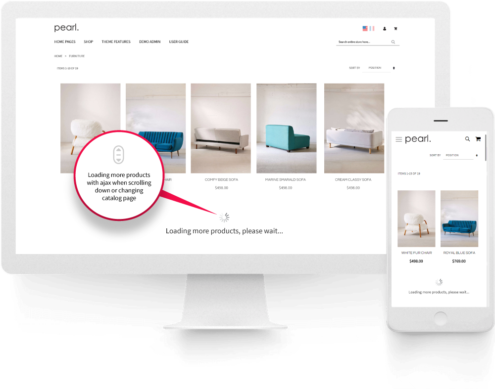
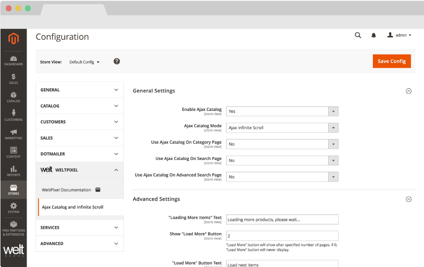
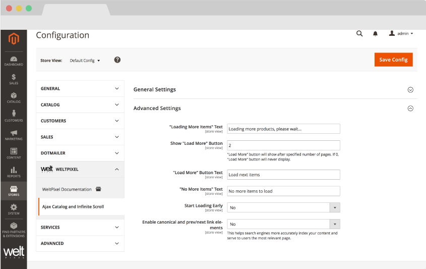

Infinite Scroll & Ajax Catalog Pagination for Magento 2.
This extension is also included in the Pearl Theme.
About Ajax Catalog.
Why is this important, how does it help?Help your customers to explore more content and reduce website friction with ajax infinite scroll and ajax pagination.
When building your store, one of your most important task is to build a website that has the least amount of friction. Less friction = better user experience results in higher conversion rate, generating higher revenue and increased customer lifetime value. Category pages and search result pages are the most visited sections of your ecommerce store. Helping your customers to explore more content will result in longer browsing experiences which can help your customers find exactly what they are looking for.
You have the option to go with two major browsing behaviours, infinite scrolling (load more) and pagination. Each UX behaviour has its benefits and we often recommend testing what works best for your customers.
Infinite scroll is commonly used by social media websites such as Facebook, Instagram and Twitter. Your customers were educated to scroll down by the Social Media giants. You will often find that this user experience is best on mobile devices, which often reaches even 70% to 80% of the total traffic (highly influenced by your industry). Other benefits of using Infinite scroll is that new products will load dynamically without the need of refreshing the entire page, your customers can simply scroll up to view and compare previous products.
Pagination is also very commonly used around ecommerce websites such Amazon.com, REI.com. Pagination helps divide content into multiple pages. To reduce friction, we are now loading the next page using the Ajax technology by removing completely the need to reload the entire page. When the users reaches the bottom of the page and click to go from page #1 to page #5 we dynamically load page #5 content without a refresh of a page and automatically scroll the user to the top of the page. Pagination is also helpful in providing the customer an initial best selection of products, you can curate best 50 products from a category that you can promote first on the first page, this will give you a better sense of control of what you display first and stop the initial presentation.
Ajax Infinite Scroll and Catalog doesn’t simply stop at giving you the option to implement Infinite Scroll or to have an Improved user experience with less friction on pagination. We are also giving you the option of both worlds. Now you have the option to start with Infinite Scroll but only load automatically the first few pages (you can define how many) and then display the load more button. The benefits are that you can now display less products on the initial load, which helps you with page speed, then automatically load page two or three of best products. Your customers will not get annoyed by never reaching the bottom of your page and you have better control of displaying the best of the best of each category first. It’s basically a Win! Win! Win! Solution.
When implementing this solution we focused heavily on improving SEO as well. The solution closely follows Google’s Infinite Scroll implementation by generating rel=next and rel=prev at the correct page in conjunction with the canonical tag.
Features of the Extension.
- Ajax Infinite Scroll - infinite product load while scrolling down
- Ajax Next Page - loading next page without reloading entire page
- Add a Custom Loading Placeholder to replace the default spinner with your own gif.
- "Show More" button available after a specified number autoloaded pages
- NEW: Loaded Items Progress Bar - display a progress bar that informs the user how many products they've already seen out of the total in the Category.
- Reduce website friction, improve user experience and conversion rate
- Helps users explore more content
- Control the number of the pages that autoload automatically
- Customizable notification messages
- Possibility to disable for search result pages
- SEO Optimized functionality
- Speed improvements
- Clean open source code
- Easy installation
HOW TO INSTALL
This extension is FREE and OPEN-SOURCE. The source code and installation files are available on GitHub.
GitHub Repository
Access the extension source code and download the installation files from our GitHub repository:
https://github.com/Weltpixel/magento2-weltpixel-ajax-infinite-scroll
Installation Instructions
Please refer to the README file in the GitHub repository for detailed installation instructions.
General Installation Steps
- Step 1: Download or clone the repository from GitHub
- Step 2: Copy the extension files to your Magento 2 app/code/ directory
- Step 3: Run setup commands:
php bin/magento setup:upgrade php bin/magento setup:di:compile php bin/magento setup:static-content:deploy -f
- Step 4: Flush cache: php bin/magento cache:flush
How to use Ajax Infinite Scroll.
General Settings:
Go to WeltPixel > Ajax Catalog & Infinite Scroll > General Configuration
- Enable Ajax Catalog and set this option to [ Yes ].
- Ajax Catalog Mode select Ajax Infinite Scroll
Functionality control for Category, Search and Advanced Search Page. When your store is integrated with external search solutions you may need to disable ajax for search pages in order to achieve default magento behaviour and therefore achieve full compatibility with other solutions.
- Use Ajax Catalog on Category Page and set this option to [ Yes ]
- Use Ajax Catalog on Search Page and set this option to [ Yes ]
- Use Ajax Catalog on Advanced Search Page and set this option to [ Yes ]


Advanced Settings:
- "Loading More Items" Text - Define the text that will display after the Load More button is clicked/tapped while the new content is loading
- Show number of already viewed and remaining products - Enable/Disable the Loaded Items Progress Bar functionality, which will display the number of already viewed and remaining products on the Category Page.
- Text for "Show number of already viewed and remaining products" - Choose the text you want the Loaded Items Progress Bar to display. Ex. "Loaded 12 of 100 products" - Use %1 for the number of already viewed products and %2 for the total number of products in the category.
- Show "Load more" button - In Magento you already predefined how many products to display on the category page. Let’s consider you set it to 25. This option defines after how many pages to display the load more button. Ex. 2 pages will load 2X25 products = 50 then it will display the Load More button. This option creates the balance by keeping your category pages light on initial load, having the ability to reach the footer easily and gives you the opportunity to have control over what is the most important on the page. By setting the value to 0, the Load more button will never display and it will automatically load new products until all the products from the category gets displayed.
- "Load More" button text - The text that will display on the button “Load More” / “Show More”
- No More Items Text - The text that will display as soon as all products from the category get loaded
- Start Loading Early - To Make the scrolling experience even smoother, you have now the option to pre-load products when the customers are approaching the end of the list with new products. Setting this value to Yes will prevent when there is a normal browsing experience the customer from waiting on the next page to load. This option will only work for the first few pages defined in STEP 3 or for all if set to 0
- Negative Margin - Load new items earlier considering the pixels offset configured. More items will start loading when you have less than specified pixels until the bottom of the page. Ex. 250. This option is only valid if Loading Early is set to Yes
- Enable canonical and prev/next link elements - We followed closely how Google is recommending the implementation of the rel=next, rel=prev and canonical tag.
- Custom Loading Placeholder - Enable to be able to upload your own custom loading image.
- Placeholder Width - Choose the maxmimum width of the placeholder image you uploaded in pixels. For example, for a width of 50 px, insert "50".
How to use Ajax Next Page.
General Settings:
Go to WeltPixel > Ajax Catalog & Infinite Scroll > General Configuration
- Enable Ajax Catalog and set this option to [ Yes ].
- Ajax Catalog Mode select Ajax Next Page
Functionality control for Category, Search and Advanced Search Page. When your store is integrated with external search solutions you may need to disable ajax for search pages in order to achieve default magento behaviour and therefore achieve full compatibility with other solutions.
- Use Ajax Catalog on Category Page and set this option to [ Yes ]
- Use Ajax Catalog on Search Page and set this option to [ Yes ]
- Use Ajax Catalog on Advanced Search Page and set this option to [ Yes ]
Advanced Settings:
- "Loading More Items" Text - Define the text that will display after the Load More button is clicked/tapped while the new content is loading
- No More Items Text - The text that will display as soon as all products from the category get loaded
- Enable canonical and prev/next link elements - We followed closely how Google is recommending the implementation of the rel=next, rel=prev and canonical tag.
Change Log.
What's new in v.1.16.0 - January 7, 2026
- Giving back: As a celebration of over 10 years of activity within the Magento 2 ecosystem, and as a way to give back to the community, a number of WeltPixel extensions (both FREE and paid) have officially gone fully Open Source via public Github repositories. Find the full list on Github.
- This extension has moved to a fully Open Source model and is available publicly on Github. See the link in the Change Log entry above to find it.
What’s new in v.1.15.9 - October 28, 2025
- Magento Compatibility: Introduced compatibility with the latest released Magento 2 Security Patches - Magento 2.4.8-p3, Magento 2.4.7-p8, Magento 2.4.6-p13, Magento 2.4.5-p15 & Magento 2.4.4-p16.
- New Feature: Added improvements to Magento Admin messaging around Product Updates to ensure visual clarity for users not running the latest product release.
- New Feature: Added .ddev.site and .cloudwaysapps.com as accepted development domains. These domains will no longer require additional license keys.
What’s new in v.1.15.7 - September 2, 2025
- Magento Compatibility: Introduced compatibility with the latest released Magento 2 Security Patches - Magento 2.4.8-p2, Magento 2.4.7-p7, Magento 2.4.6-p12, Magento 2.4.5-p14 & Magento 2.4.4-p15.
- Added additional validations to prevent Magento Admin errors when the Backend extension could not fetch the current server user due to permissions issues.
- Added adjustments to frontend templates to adhere to Magento Best Practices regarding XSS validations.
- Fixed a CSP issue that would sometimes prevent orders from being created via the Magento Admin.
What’s new in v.1.15.3 - June 20, 2025
- Magento Compatibility: Introduced compatibility with the latest Magento 2.4.8-p1, 2.4.7-p6, 2.4.6-p11 & 2.4.5-p13 Security Patches releases. Upgrade ASAP to keep your store secure.
- Fixed the Backend functionality that enables users to change the default Magento CSP Restriction Mode via the Magento Admin. This was broken starting with Magento 2.4.7.
What’s new in v.1.15.0 - April 22, 2025
- Magento Compatibility: Introduced compatibility with the new Magento 2.4.8 release, as well as the accompanying 2.4.7-p5, 2.4.6-p10, 2.4.5-p12 and 2.4.4-p13 Security Patches.
- PHP Compatibility: Introduced compatibilty with PHP 8.4, which is now officially compatible with the latest Magento 2.4.8 version.
- New Feature: Added magento2.docker as a valid domain for development purposes.
- New Feature: Added ddev.site as a valid domain for development purposes.
- Fixed an issue that would prevent certain extension options from correctly applying in Single Store Mode instances.
- Added backend licensing adjustments for compatibility with the Google Analytics & Social Marketing Suite PRO.
What’s new in v.1.14.13 - February 17, 2025
- Magento Compatibility: Introduced compatibility with the newly released Magento 2.4.7-p4, 2.4.6-p9, 2.4.5-p11 and 2.4.4-p12 versions.
- Fixed an issue related to licensing which would prevent license keys from being validated various subdomains.
What’s new in v.1.14.11 - January 15, 2025
- Removed deprecated Magento 2.2.x code version from extension package.
What’s new in v.1.14.9 - November 26, 2024
- Added minor Magento Admin adjustments to the module status section for increased clarity and compatibility with server-side Social Pixel addons.
What’s new in v.1.14.7 - October 11, 2024
- Compatibility: Introduced compatibility with the latest Magento 2.4.7-p3, 2.4.6-p8, 2.4.5-p10 and 2.4.4-p11 versions, which come with critical security adjustments for the platform. Magento 2 merchants are urged to upgrade to the latest patches ASAP.
- Fixed an error that would sometimes be thrown in the Magento logs when the extension couldn't properly pick up the page URL for use with the canonical functionality.
- Added various code updates for increased security around the licensing functionality as well as the Help Center and WeltPixel Developer Magento Admin sections.
What’s new in v.1.14.5 - August 23, 2024
- Compatibility: Introduced compatibility with the latest Magento 2.4.7-p2, 2.4.6-p7, 2.4.5-p9 and 2.4.4-p10 versions, which come with critical security adjustments for the platform. Magento 2 merchants are urged to upgrade to the latest patches ASAP.
What’s new in v.1.14.3 - June 20, 2024
- Compatibility: Introduced compatibility with the latest Magento 2.4.7-p1, 2.4.6-p6, 2.4.5-p8, 2.4.4-p9 versions, which come with critical security adjustments for the platform. Magento 2 merchants are urged to upgrade to the latest patches ASAP.
- New Feature: Added a new section in the Magento Admin that checks to make sure the latest product version is installed and notifies in case an update is available, as well as a button that allows for new features to be requested.
What’s new in v.1.14.1 - April 19, 2024
- Added minor adjustments to "next" and "previous" page link structure for improved technical on-page SEO.
- Confirmed compatibility with the latest Magento 2.4.7 release, as well as newly released 2.4.6-p5, 2.4.5-p7 & 2.4.4-p8 Security Patches.
- Confirmed compatibility with PHP 8.3 on the Magento 2.4.7 release. PHP 8.2 is also supported for this Magento version.
- Added security improvements to the Backend module's license verification process.
What’s new in v.1.11.21 - January 9, 2024
- Added various optimizations for ADA compliance to ensure a high degree of compatibility and increased scores across testing platforms.
- Added minor adjustments for increased compatibility with Varnish Caching in conjunction with the Google Analytics 4 extension.
- Added small adjustments to the JS Parser used alongside the Speed Optimization extension for performance improvements.
- Fixed an error that would be thrown in the WeltPixel -> Extensions Version admin section when a module's composer.json file was missing the version node.
What’s new in v.1.11.19 - October 19, 2023
- New Feature: Added a new functionality that allows you to display a Progress Bar which indicates the number of products that have already been loaded, as well as the total number of products available in the Category.
- Optimized the license verification process for increased Magento Admin performance, as well as to account for licensing server downtimes.
- Fixed an issue that would sometimes result in an error being thrown when using older PHP versions, such as PHP 7.4.
- Confirmed compatibility with the newly released Magento 2.4.6-p3, 2.4.5-p5, and 2.4.4-p6 Security Patches.
What’s new in v.1.11.17 - June 28, 2023
- Fixed a bug that would cause an incorrect addition of tags to Category Pages which were configured to display as Static Blocks with products assigned.
- Added minor PHP 8.2 related adjustments.
- Confirmed compatibility with the latest Magento Security Patch releases 2.4.6-p1, 2.4.5-p3 and 2.4.4-p4.
- Fixed an error related to PHP 8.2 that would show when accessing the WeltPixel Debugger.
- Added .localdev as a universally accepted licensing domain.
What’s new in v.1.11.15 - March 22, 2023
- Fixed a bug that would occasionally prevent certain frontend notification messages from being displayed.
- Fixed an error that would sometimes be thrown in the WeltPixel Debugger, depending on various server permissions.
- Added compatibility with the latest Magento 2.4.6 and 2.4.5-p2 versions.
What’s new in v.1.11.11 - November 23, 2022
- New Feature: Added compatibility with the Google Analytics 4 PRO for sending Item List Views via Measurement Protocol.
- Confirmed compatibility with the latest Magento Security Patch releases 2.4.5-p1 and 2.4.4-p2.
What’s new in v.1.11.7 - September 1, 2022
- Confirmed compatibility with the latest Magento 2.4.5 and 2.4.4-p1 versions.
- Updated installation/upgrade scripts to use data patches.
What’s new in v.1.11.1 - April 25, 2022
- Initiated a clear of the dataLayer eCommerce object before a push event - This applies only when using the extension together with the Google Tag Manager and/or Google Analytics 4 modules.
- Fixed an incorrect licensing message on B2B Magento Enterprise instances which would display when an invalid license was entered.
- Confirmed compatibility with the latest Magento 2.4.4 and 2.3.7-p3 versions as well as PHP 8.1.
What’s new in v.1.10.17 - October 22, 2021
- Fixed a bug that that caused an inability to load a product collection when accessing a Product Page and clicking the back button in a browser after having initially filtered products using an attribute ending in the letter "p". This only happened in conjunction with the Layered Navigation extension.
- Confirmed compatibility with the latest Magento 2.4.3-p1 and 2.3.7-p2 versions.
What’s new in v.1.10.15 - August 31, 2021
- Improved item counter clarity on Category Pages when in Infinite Scroll mode.
- Confirmed compatibility with the newly released Magento 2.4.3, 2.4.2-p2 and 2.3.7-p1 versions.
- Added .localhost as an accepted domain termination for the licensing process.
What’s new in v.1.10.11 - July 7, 2021
- Fixed a console error that would be thrown on Category Pages when Categories or Products had special characters in their names.
- Added improvments to the WeltPixel Developer Magento Admin section. Latest Cron Jobs now lists the last 100 executed Cron Jobs.
What’s new in v.1.10.9 - May 18, 2021
- Confirmed compatibility with the newly released Magento 2.3.7 and 2.4.2-p1 versions.
What’s new in v.1.10.7 - March 26, 2021
- Excluded Magento 2.0.x - 2.2.x from new features and fixes starting with this release.
- Adjusted WeltPixel Developer section comments.
What’s new in v.1.10.5 - February 12, 2021
- Fixed a bug that caused the Quick View button to lose stying when changing the page via Infinite Scroll (Only when using the Quick View extension).
- Fixed a bug that caused the Infinite Scroll functionality to break on certain configurations.
- Fixed a display issue related to default Magento Pagination Anchor Text aligments.
- Confirmed compatibility with the newly released Magento 2.4.2 version.
- Added additional backend versioning verifications.
- Backend code optimizations.
What’s new in v.1.10.1 - October 22, 2020
- Added design and functionality adjustments in Grid View for smoother UX.
- Confirmed compatibility with the newly released Magento 2.4.1 version.
What’s new in v.1.10.0 - August 10, 2020
- Fixed an issue that prevented the custom loader uploaded from being displayed when the extnsion was configured to use Ajax Next Page.
- Confirmed compatibility with the newly released Magento 2.4.0 version.
What’s new in v.1.9.8 - July 6, 2020
- New Feature: Added the possibility of uploading a Custom Loader for Ajax Catalog and Ajax Infinite Scroll functionalities.
- Whitelisted domain for Content Security Policies introduced in Magento 2.3.5.
What’s new in v.1.9.7 - May 7, 2020
- Confirmed compatibility with Magento 2.3.5.
- Implemented small Backend performance optimizations.
- Added nxcli.net (Nexcess temporary URL) as a valid domain in the licensing process.
- Added an option in the Developer section to allow for switching Magento's CSP between "report-only" and "restrict".
What’s new in v.1.9.6 - April 9, 2020
- Fixed a Backend issue on Magento Commerce whereby the Category Schedule functionality was not working properly.
What’s new in v.1.9.5 - March 10, 2020
- Fixed an issue that caused a console error when using special characters in the Advanced Settings section of the extension configuration.
- Added backend Google reCaptcha compatibility for Magento 2.3.x
What’s new in v.1.9.4 - February 5, 2020
- Fixed a bug which, in some cases, prevented items from being added to cart after a page load with infinite scroll.
- Code enhancements for increased security. Changed User Group info collection method.
- Confirmed compatibility for Magento 2.3.4.
What’s new in v.1.9.2 - November 27, 2019
- Fixed a bug which caused Swatches to display incorrectly after filtering or sorting via Ajax.
- Added Magento and PHP version in the WeltPixel Developer section.
What’s new in v.1.9.1 - October 16, 2019
- Fixed an issue which caused pages to become unresponsive when switching pages via Infinte Scroll when the Magento Option to Redirect to Cart Page on Add to Cart was set to Yes.
- Fixed an issue that caused Swatches to disappear from the Category Page products after sorting or filtering and scrolling to the next page.
- Confirmed compatibility with the latst Magento 2.3.3 version.
- Included the WeSupply Toolbox integration extension - Proactive Notifications Email & SMS, Returns & RMA, Store Locator, Delivery Date Estimate, Logistics Analytics, NPS & CSAT score. Get Free on-boarding and launch within 24 hours.
What’s new in v.1.9.0 - July 18, 2019
- Confirmed compatibility with Magento 2.3.2.
- Added HTTPS endpoint for licensing process.
What’s new in v.1.8.5 - June 7, 2019
- Small performance improvements.
What’s new in v.1.8.4 - April 25, 2019
- Added PHP version in the WeltPixel Developer Section.
What’s new in v.1.8.3 - April 3rd, 2019
- Fixed an issue whereby the Load Previous Items button text could not be changed.
- Confirmed compatibility for Magento 2.3.1.
What’s new in v.1.8.2 - January 24, 2019
- Fix for padding issues when swatch option is set to yes on category page.
- Removed console log.
- Removed CategoryPage helper dependancy and moved it into the theme instead of this extension.
- Fixed a bug that prevented correct functionality of Layered Navigation if Infinite Scroll was disabled - compatibility fixes.
- Helpcenter adjustment, removed zendesk iframe and added a simple link to our Support Center in order to avoid any potential conflicts with other admin js added by 3rd party extensions.
- Fix for multiple rewritten ImageFactory classes, rewrite check validity, rewrite checks optimizations.
What’s new in v.1.8.0 - December 8, 2018
- Compatibility adjustments for Magento 2.1.16/2.2.7/2.3.0.
- PHP 7.2 compatibility added.
- As Magento 2.3 comes with major core changes, we have provided a different set of files in order to achieve the best performance on each version.
What’s new in v.1.7.5 - October 24, 2018
- Fixed CTRL+Click issue on category page, now pages open in a new tab.
- Added compatibility with our newly released WeltPixel Product Labels Extension.
- Added detailed error messages for invalid licenses for an easier identification of the cause.
- License improvements, added *.magento.cloud as a valid test domain for Enterprise Cloud environments. Now both ‘magentosite.cloud’ and ‘magneto.cloud’ can be used for testing purpose with the production domain license.
What’s new in v.1.7.4 - September 25, 2018
- Fixed bundle js error / production mode.
- Added 'Load previous items' option in admin to configure text / translation.
- Added compatibility with just released Advance Category Sorting extension by WeltPixel.
- Admin menu styling to fit screen size 1366px.
- Fix for production mode with merged JS - missing color pallet display now fixed.
What’s new in v.1.7.3 - August 23, 2018
- Infinite Scroll compatibility with Layered Navigation - improvements and optimizations.
- License improvements, adding *.magento.cloud as a valid test domain.
What’s new in v.1.7.2 - August 2, 2018
- WeltPixel Layered Navigation - Ajax infinite scroll pagination fix.
- Google Tag Manager compatibility - data layer impressions push for ajax loaded content.
- Fixed JS srror: Cannot read property length of null”.
- Fixed swatches loading after ajax call.
- Fixed admin random logout issue.
- Licensing improvements, allowing 3 letter domain as valid domain.
What’s new in v.1.7.1 - July 12, 2018
- Ajax Catalog & Infinite Scroll compatibility with Layered Navigation.
- Compatibility with Magento 2.2.5 both Open Source & Commerce Cloud B2B.
- Added domain.test & [any_subdomain].domain.test to the list of valid urls for staging/development environments. Added domain validation with port number included for licensing purpose.
- Added licensing compatibility with Magento B2B.
What’s new in v.1.7.0 - July 5, 2018
- Added option to enable/disable WeltPixel admin notifications.
- Show store and server related information under debugging tab: Magento Mode, Magento Edition, Server User, Magento Installation Path, Current server time, Latest cron jobs.
- Added licensing, license key needs to be generated under weltpixel.com account for purchased product, based on domain name and added under your magento installation.
What’s new in v.1.6.4 - May 16, 2018
- Compatibility with Magento 2.2.4, logger broken reference fix, changed to rewrite from plugin.
- Removed extra parameter from store url generated by infinite scroll functionality
- Fix for ‘previous page load’, now when user hits the back button and returns in listing view mode, will land on the last page loaded with ajax or infinite scroll (ex: listing page 4)
What’s new in v.1.0 - February 23, 2018
- Initial release